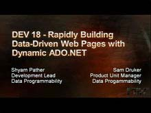
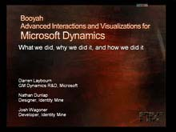
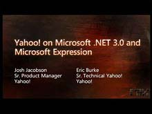
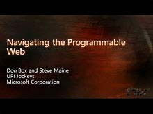

MIX is a gathering of developers, designers, UX experts and business professionals creating the most innovative and profitable consumer siteson the web. Sessions range from technical, code-based topic…
Building Silverlight Applications Using .NET (Part 2 of 2)[WMV] [2007/05/07]This session demonstrates building a rich interactive application (RIA) using Silverlight. We cover how to use Microsoft Visual Studio to create applications, how to create UI using XAML markup and…
Extending the Browser Programming Model with Silverlight[WMV] [2007/05/07]Learn how to extend your Web applications with Silverlight.
High-Speed Development with the AJAX Control Toolkit[WMV] [2007/05/07]The ASP.NET AJAX Control Toolkit is a set of controls and extenders designed to help ASP.NET developers easily integrate rich client UI features into their Web applications. As a community effort, the…
Building Rich Web Experiences Using Silverlight and JavaScript for Developers [WMV] [2007/05/07]
[WMV] [2007/05/07]Windows Presentation Foundation 'Everywhere' (codename) is Microsoft's solution for delivering rich, cross-platform interactive experiences for the Web and beyond. WPF/E will enable the creation of…
Designing the Perfect Podcast Player [WMV] [2007/05/07]
[WMV] [2007/05/07]No one makes it now but podcast listeners know what they want. Join Dave and Jon in a solidly spirited and productive discussion.
Making Money with RSS[WMV] [2007/05/07]Learn how to use RSS to engage with your customer and pull them directly into your world. Find out how to create new revenue opportunities by enabling your customers to purchase directly from your…
Rapidly Building Data Driven Web Pages with Dynamic ADO.NET[WMV] [2007/05/07]Come learn about how new technologies from Microsoft bring together the concepts of dynamic languages and ADO.NET and allow you to quickly develop data driven Web pages using ASP.NET dynamic data…
IE7 Past, Present, and Future[WMV] [2007/05/07]Hear from Microsoft's Internet Explorer 7 team about the journey from mea culpa to broad market acceptance. Hear what went right, what had to be cut, and how development priorities are set. Also,…
Microformats: Data Formats That Put Humans First [WMV] [2007/05/07]
[WMV] [2007/05/07]Go deep on microformats. Designed for humans first and machines second, microformats are a set of simple, open data formats built upon existing and widely adopted standards. Instead of throwing away…
Enable Windows CardSpace and Information Cards in Your Web Site[WMV] [2007/05/07]Do you want to get started with Windows CardSpace, but don't know where to start? CardSpace simplifies and strengthens the authentication experience on the Internet. Whether your Web site runs on…
Internet Sites with Microsoft Office SharePoint Server 2007[WMV] [2007/05/07]Come learn about the Microsoft Office SharePoint Server enhancements that enable Internet-facing applications and how to take advantage of the content management and site publishing capabilities it…
Windows Presentation Foundation in Real World Development[WMV] [2007/05/07]Join frog design, Microsoft, and Yahoo! in a discussion and demonstration of the tools and technologies used in the development of the new Yahoo! Messenger. We touch on everything from Microsoft…
Designing with Microsoft Expression Web: Today and Tomorrow[WMV] [2007/05/07]Microsoft Expression Web 1.0 is still hot off the presses. Come and get in-depth tips and tricks on this great standards-based design tool. In addition, get a preview of the direction we're taking as…
A View from the Front: Real World Experiences of WPF and Silverlight[WMV] [2007/05/07]In this session, Andy Hood, Creative Development Director at AKQA, presents a walk-through of several Windows Presentation Foundation (WPF) and Silverlight projects designed and built by AKQA this…
Developing with Windows Live Spaces[WMV] [2007/05/07]Learn how you can add Microsoft Web Gadgets to Windows Live Spaces, which launched as a blogging service two years ago and has grown into a social networking platform with over 100 million users…
Building Web-Based Line-of-Business Applications on the Microsoft Dynamics Live CRM Platform[WMV] [2007/05/07]In this session, we explore how developing applications on the Microsoft Dynamics Live CRM platform can speed up delivery of applications in the cloud. We look at the basics of the Microsoft Dynamics…
Windows Presentation Foundation for Developers - Part 1[WMV] [2007/05/07]Windows Presentation Foundation (WPF) is a paradigm-shifting framework for building rich Windows applications. Learn how to build an application with seamless deployment, rich user experience, great…
Using Visual Studio Codename "Orcas" to Design and Develop Rich AJAX Enabled Web Sites[WMV] [2007/05/07]See how Microsoft Visual Studio codename "Orcas" takes Web development to the next level. See a demo-filled tour of all improvements in Visual Studio around ASP.NET and AJAX development. Topics…
The Megasite: Infrastructure for Internet Scale[WMV] [2007/05/07]Come hear MySpace share its experiences using Microsoft technologies to run Web applications for the most visited site on the Web. MySpace discusses its best practices for a massively scalable,…
Opening up Windows Live Data[WMV] [2007/05/07]Data wants to be free! So come to this technical deep dive to learn how you can POST/GET/PUT/DELETE your way into Windows Live. We'll cover how you can ask users for permission to access and then…
Experience: A Star to Sail Your Ship By [WMV] [2007/05/07]
[WMV] [2007/05/07]Engage in a deep dive on the importance of experience. In this session we cover historical perspective; lay out the evolution of product categories; demonstrate the competitive advantage that…
Can't ASP.NET and PHP Just Get Along? [WMV] [2007/05/07]
[WMV] [2007/05/07]How do you make two great technologies go superbly together? Join a spirited yet friendly discussion on PHP and ASP.NET interoperability.
Building Silverlight Applications Using .NET (Part 1 of 2)[WMV] [2007/05/07]This session demonstrates building a rich interactive application (RIA) using Silverlight. We cover how to use Microsoft Visual Studio to create applications, how to create UI using XAML markup and…
Scrubbing Your AJAX[WMV] [2007/05/07]Learn how AJAX is being used for good and evil. See where to find vulnerabilities (hint: not just in the code). Discuss methods others are using to overcome challenges and methods for securing…
Social Networking: Enabling the Two-Way Street [WMV] [2007/05/07]
[WMV] [2007/05/07]Web applications with a social context are here to stay. Are underlying Social Networks a business or feature? How can they be used to enhance bi-directional communication? Join a rich discussion on…
Ink for Designers and Developers [WMV] [2007/05/07]
[WMV] [2007/05/07]Imagine if your users could add handwritten annotations over online photos, greeting cards or video (including live playback of your handwriting). Learn how to use Ink to take your Web sites to new…
Go Deep with AJAX[WMV] [2007/05/07]Go below the surface of ASP.NET AJAX and see how the Microsoft AJAX Library and the ASP.NET AJAX server controls come together to create a rich platform for developing more immersive, responsive and…
Booyah! Designing and Developing Line-of-Business Applications That SIZZLE[WMV] [2007/05/07]In this session we explore how amping design and taking advantage of data visualization techniques and 3D can make a major impact on usability and ultimately acceptance of line-of-business…
Digital Identity and the Psychology of Security[WMV] [2007/05/07]Identity is our most valuable possession, but a missing layer on the Internet today. Discuss how others are working to reduce the episodes of theft and deception that will cumulatively erode public…
Open Source Applications Using the .NET Platform[WMV] [2007/05/07]What are the secrets of successfully co-mingling x-platforms and browsers? Talk to platform veterans and share your Microsoft/OSS interoperability tips and tricks.
Using the Desktop and Web to Power Ultimate User Experience Applications[MP4] [0:41:42] [2007/05/07]Today's web properties aim to differentiate themselves from their competition by offering dramatically better user experiences to their customers. These new web experiences include improved…
There Is No Free Lunch[MP4] [1:07:34] [2007/05/07]Advertising supported content and services on the Internet are now taken for granted by most consumers, and marketers have become increasing aggressive in collecting anonymous, and private information…
Designing with AJAX: Yahoo! Pattern Library[MP4] [1:17:01] [2007/05/07]With the recent rise in popularity of AJAX, we now have the opportunity to more closely model the real flow of the user. This presents a radical change to the designer paradigm-designers create in…
[PAN01] [WMV]
[WMV]
[BDM01][WMV]
[XD007][WMV]
[PAN13][WMV]
[BD005][WMV]
[DES07][WMV]
[DEV05][WMV]
[DEV20][WMV]
[PAN14][WMV]
[XB005][WMV]
[XD002] [WMV]
[WMV]
[XBD03][WMV]
[XD005][WMV]
[BD002][WMV]
[XD010][WMV]
[BD001][WMV]
[PAN04][WMV]
[XBD06][WMV]
[XD008][WMV]
[XD009][WMV]
[XD001][WMV]
[BDM03][WMV]
[DES05][WMV]
Keyword Services Platform (KSP) from Microsoft adCenter[MP4] [1:05:19] [2007/05/07]Come learn how the KSP will revolutionize the search industry by allowing advertisers and developers to build KSP applications using public APIs. This session describes KSP and how it works. It also…
[KYN001][WMV]
[XBD09][WMV]
[DEV13][WMV]
[XB004][WMV]
[DEV16][WMV]
[XBD08][WMV]
[XD003][WMV]
[XD006][WMV]
Using LINQ to Dramatically Improve Data Driven Development in Web Applications[MP4] [1:16:13] [2007/05/07]Modern applications operate on data in several different forms: Relational tables, XML documents, and in-memory objects. Each of these domains have profound differences in semantics, data types, and…
[KYN002][WMV]
[DEV23][WMV]
[DEV02][WMV]
[DEV15][WMV]
[BDM04][WMV]
[PAN11] [WMV]
[WMV]
[BD007][WMV]
[BDM05][WMV]
[PAN12] [WMV]
[WMV]
[BDM02][WMV]
[DES04][WMV]
[DEV17][WMV]
[XB002][WMV]
[DES02][WMV]
[DEV03][WMV]
[BD006][WMV]
[XB003][WMV]